Tax liabilities depend on a taxpayer's filing status, meaning whether a taxpayer is married or single and, if single, whether he or she lives with children or other dependents. Single taxpayers with children or other dependents are considered heads of household. Couples who marry may face financial penalties or bonuses. Dual-earner couples with similar incomes are more likely to face a marriage penalty, paying more income tax as a married couple than they would if they each filed separately. Dual‐earner couples with disparate incomes, on the other hand, are more likely to get a marriage bonus, paying less income tax as a married couple than they would if they each filed separately. Under current law, many more couples receive marriage bonuses than incur penalties from filing jointly.
In 2019, just over half of all White households were married couples, compared with 60 percent of Asian households, 48 percent of Hispanic households, and 27 percent of Black households. Black households had the largest shares of parents with no partner present and of people living alone.
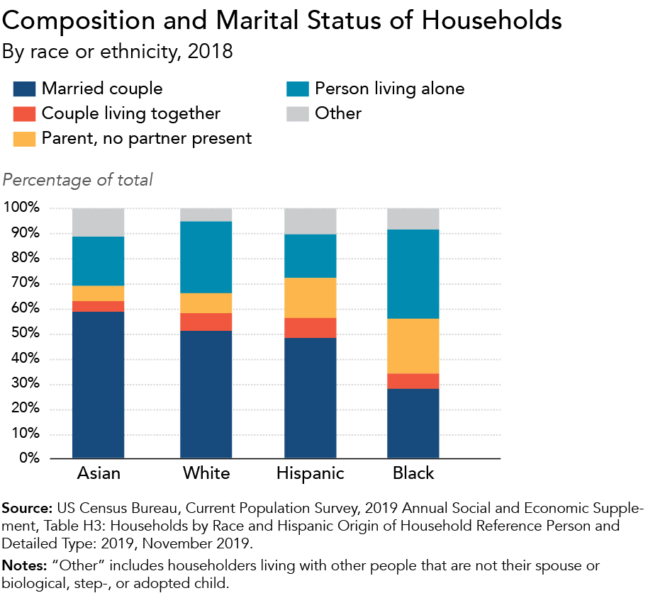The overall marriage rate in America has declined over the past 50 years, but especially so for Black households. Marriage rates are typically higher for higher-income couples, and people of color are likelier to cite financial instability as a major reason for not getting married.
Where to find this information on Form 1040: Filing status
A Social Security number (SSN) is a crucial identifier for people in the United States. It is used to track earnings and years worked to determine eligibility for Social Security benefits, unemployment insurance, and many public assistance programs. Most taxpayers use an SSN as an identifier on their individual income tax returns. Taxpayers ineligible for SSNs, such as undocumented immigrants and certain other noncitizens, generally file taxes using an Individual Taxpayer Identification Number (ITIN) issued by the Internal Revenue Service. Applying for or renewing ITINs, however, can be particularly challenging.
In 2017, around 10.5 million people in the United States were undocumented immigrants, though estimates vary. Most came from Mexico and Central America and resided in the most populous states, with a median stay of over 15 years. Over 70 percent of undocumented immigrants were in the labor force; they constitute about 5 percent of the total US labor force.
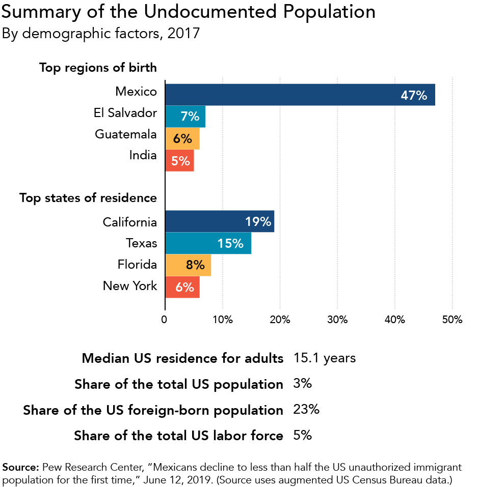Many undocumented immigrants pay income taxes on their wages, often through withholding on their paychecks. These immigrants often file income tax returns through an especially complicated filing process. Further, undocumented taxpayers have contributed billions in payroll taxes while remaining ineligible for Social Security benefits or most other tax or nontax public benefits.
Where to find this information on Form 1040: Your social security number
Several federal income tax provisions are connected to a taxpayer's age. For example, taxpayers age 65 or older in 2019 have a slightly higher income threshold for filing taxes because they may increase their standard deduction by an additional $1,650 (for single or head-of-household filers). They may also claim a nonrefundable credit for the elderly and disabled, though relatively few taxpayers do so.
Age distribution among taxpayers varies widely by race and ethnicity: the median age for Asian people is 37, compared with 34 for Black people, 30 for Hispanic people, and 44 for White people. About two-thirds of all Hispanic people and over half of Asian and Black people are either Generation Z or millennials; one-third of all White people are either baby boomers or from the Silent or Greatest Generations.

Almost half of people paying no federal income taxes are retirees living on Social Security benefits. But current Social Security benefits are often not sufficient for older adults to live on, and older adults of color face higher poverty rates.
Where to find this information on Form 1040: Standard deduction (age/blindness) [were born before January 2, 1955]
Adjusted gross income (AGI) is the income taxpayers receive from sources such as wages, salaries, interest, or dividends, minus certain expenses such as student loan interest or educator and moving expenses. It is not a comprehensive measure of income; it excludes tax-exempt items such as some employee benefits and retirement income. However, the distribution of AGI from income tax returns illustrates the income disparity in the US: people with over $100,000 in AGI constitute less than 20 percent of tax returns but report about 60 percent of total AGI.
Income disparity is especially wide by race and ethnicity. In 2018, White and Asian households had significantly higher average income (as well as higher income per household member) than Black and Hispanic households. Over half of Black households and almost half of Hispanic households had income below $50,000, compared with 35 percent of White households. Asian households were more likely to have high incomes, but wide income disparities exist among Asian people across national origin.
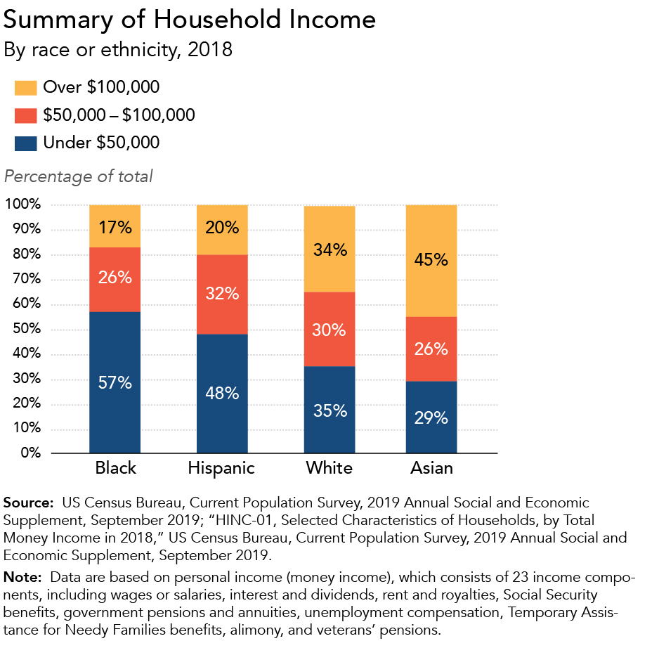Racial income gaps persist for many reasons, including hiring discrimination and disproportionately high incarceration rates for Black and Hispanic people. The federal income tax system helps reduce income inequality because it is progressive overall: it has a graduated rate structure, a standard deduction, and refundable tax credits.
Where to find this information on Form 1040: Line 7b. Total income; Line 8b. Adjusted gross income
Salary and wages are the largest source of income for low- and middle-income taxpayers: in 2017, they constituted over 70 percent of adjusted gross income (AGI) for taxpayers with AGI under $100,000 but less than 20 percent for those with AGI over $10 million. Wage disparities are particularly striking when comparing the earnings of women of color to those of White men: the median annual pay for a Black, Hispanic, or Native American woman working a full-time job is about 40 to 45 percent less than that of a White man.
Asian, Black, and Hispanic people each have larger shares of full-time workers earning poverty-level wages than White people. Among all people with at least some income from wages and salaries, White and Asian people report higher averages than Black and Hispanic people. The share of White people reporting any wage income is somewhat lower since a larger share of retirees are White.
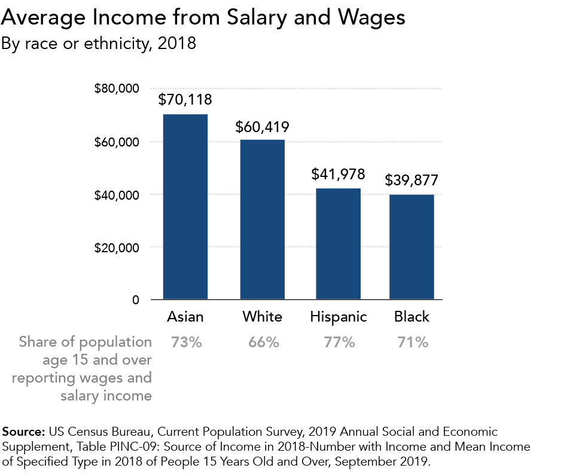Between 2000 and 2018, even controlling for factors such as education, age, and geography, the wage gap between Black and White workers grew, while the wage gap between Hispanic and White workers remained fairly stable.
Where to find this information on Form 1040: Line 1. Wages, salaries, tips, etc.
Capital gains are profits from sales of capital assets, such as shares of stock or investments in businesses or land. Capital gains are taxed only when “realized” (when the underlying asset is sold). Unlike taxes on wages, which are generally withheld as earned and must be paid annually, taxes on capital gains can be deferred by not selling the asset. The preferential tax treatment of capital gains contributes to growing disparity in wealth between White families and Black and Hispanic families. People with access to capital assets can benefit from preferential rates on assets held for more than one year before gains are realized; they can also benefit from the “step-up in basis” provision, which effectively exempts income tax on unrealized gains on assets held until death. Further, qualified dividends from corporate stock ownership also receive a preferential tax rate. These provisions will cost the federal government over $700 billion between 2019 and 2022.
White families hold almost every type of financial and nonfinancial asset at higher rates than others. Disparities in the value of corporate stocks and business equity, which generate a large share of total net capital gains, are even wider: in 2016, White families' holdings were three to four times higher in median value than those of Black and Hispanic families.

According to Tax Policy Center estimates, the top 1 percent of taxpayers by income, who are disproportionately less likely to be in households of color, received over 75 percent of total benefits from the preferential treatment of qualified dividends and capital gains in 2018.
Where to find this information on Form 1040: Line 2b. Taxable interest; Lines 3a. Qualified dividends and 3b. Ordinary dividends; Line 6. Capital gain or (loss)
Retirement savings are a crucial vehicle of wealth accumulation for many American families. Contributions to and earnings from assets in retirement plans are subject to preferential tax treatment. People with access to retirement plans (and with sufficient income to contribute to those plans) can accumulate greater savings, and the value of their assets grows effectively tax free over their lifetime.
In 2016, 60 percent of White families held retirement accounts compared with 34 percent of Black families and 30 percent of Hispanic families. For families holding assets, the White-to-Black and White-to-Hispanic ratio in average value of retirement accounts has grown from twice to three times as high between 1989 and 2016.
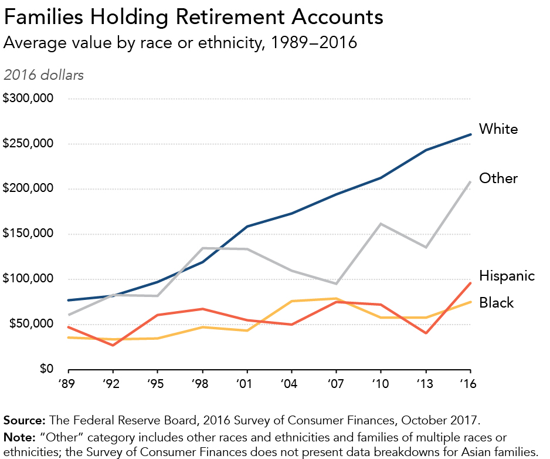The federal government spends more than $250 billion a year to encourage retirement savings through tax subsidies. But these benefits primarily go to higher-income families, with over 60 percent of total benefits going to the top 20 percent of taxpayers by income. Black and Hispanic households are less likely to be among the highest-income households, and they are therefore less likely to benefit.
Where to find this information on Form 1040: Line 4a. IRA distributions; Line 4c. Pensions and annuities; Schedule 3: Line 4. Retirement savings contributions credit
The child tax credit (CTC) provides eligible taxpayers up to $2,000 for each child under age 17. Most families with children benefit, but the credit is reduced for taxpayers earning over $200,000 ($400,000 for joint filers). The credit is partially refundable (up to a maximum of $1,400), meaning families benefit even if they do not have any income tax liability. A $500 nonrefundable credit is available for those who may not qualify for the CTC (for example, because their child is 17 or older). Along with other smaller credits for adoptions and child care expenses, these provisions will altogether cost nearly $500 billion between 2019 and 2022. Further, low and middle-income taxpayers with children also disproportionately benefit from the earned income tax credit.
About half of all US children are White, but households of color are likelier to have children. In 2018, 46 percent of Hispanic households had children under age 18 compared with 38 percent of Asian households, 31 percent of Black households, and 25 percent of White households. Children of color are likelier to be in conditions of poverty: over one-quarter of Black, Hispanic, and Native American children were in families with incomes below the federal poverty level in 2018.
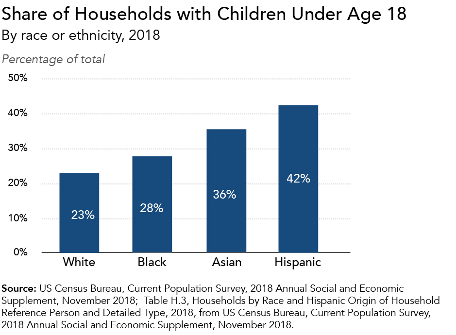Overall, a larger share of families of color benefit from the CTC because, on average, they have larger families and lower average incomes. However, the lowest-income families, who are also more likely to be families of color, are unable to qualify for the full CTC because of insufficient earnings and limits on the refundable amount of the credit.
Where to find this information on Form 1040: Line 13a. Child tax credit or credit for other dependents; Line 18b. Additional child tax credit; Schedule 3: Line 2. Credit for child and dependent care expenses
The earned income tax credit (EITC) provides income support to working taxpayers with low and moderate incomes. Although it is available to taxpayers without children, the credit is far more generous for those with children; in 2019, eligible families with three or more children have a maximum credit amount of $6,557. Almost 90 percent of the credit’s total benefits accrue to lower-income households. The credit is one of the largest tax expenditures for the federal government, costing almost $300 billion between 2019 and 2022.
Black and Hispanic households are disproportionately represented among lower-income households with children. In 2018, Black households constituted 14 percent of all households with children, but 22 percent of those with income below $55,000 (around the maximum adjusted gross income to qualify for the EITC). Similarly, Hispanic households constituted about a third of all lower-income households with children, higher than their share of all households with children.
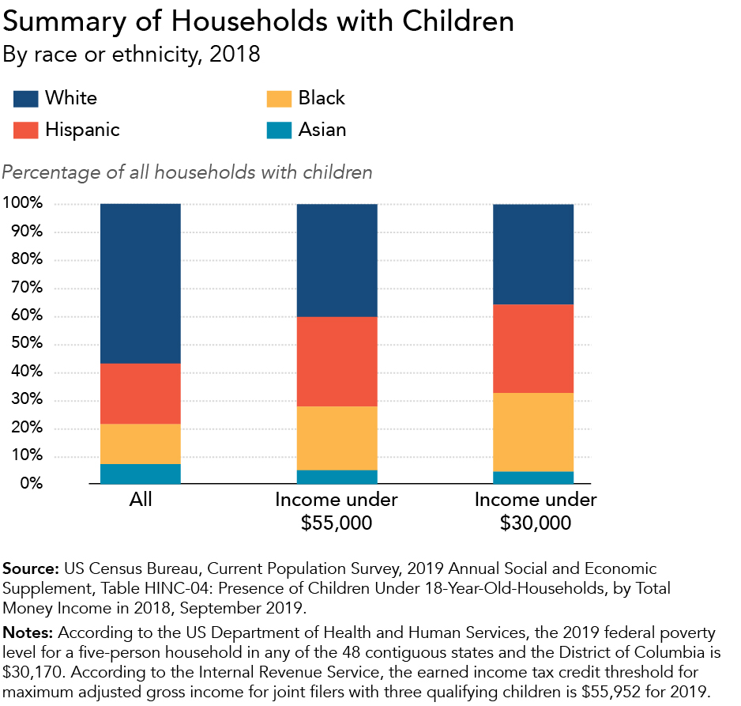Overall, White households are the largest share of EITC recipients (because they constitute a majority of the working population), but women of color in particular are disproportionately likely to benefit from the credit. The EITC has been praised as an effective antipoverty measure for people of many occupations, education levels, and geographic locations.
Where to find this information on Form 1040: Line 18a. Earned income credit (EIC)
All businesses are not taxed the same way. “Pass-through” (or flow-through) businesses, such as sole proprietorships, partnerships, limited liability companies, and S corporations, are not subject to corporate income tax. Instead, their profits are taxed as ordinary income for their individual owners. Pass-through businesses account for a rising share of total business returns. The Tax Cuts and Jobs Act of 2017 created a new and temporary 20 percent deduction for certain forms of pass-through income that it is estimated to cost the federal government more than $225 billion between 2019 and 2022.
About 6.4 percent of White people reported self-employment income in 2018, compared with 6 percent of Hispanic people, 5 percent of Asian people, and 4.4 percent of Black people. But among those with at least some self-employment income, the average amounts reported varied widely: Asian people reported about $54,000 on average from nonfarm self-employment income, compared with $39,000 for White people, $36,000 for Hispanic people, and about $26,000 for Black people.
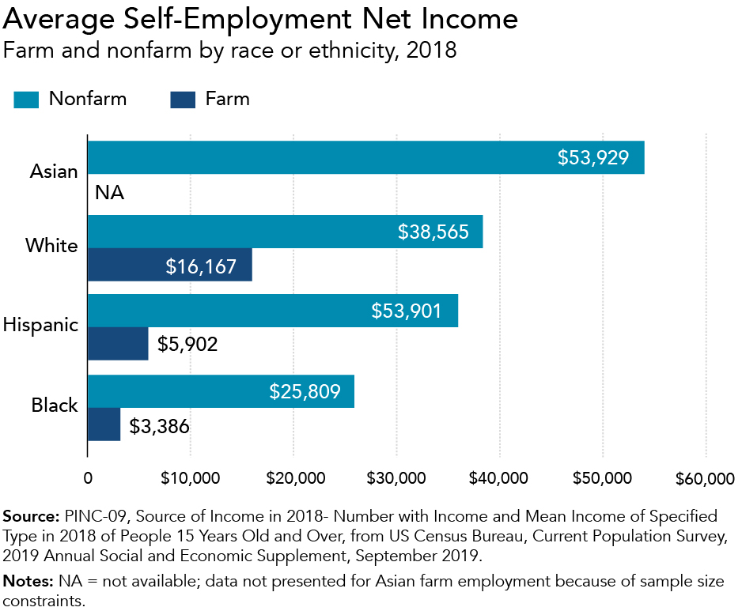Over half of total benefits from the new deduction for pass-through business income will accrue to the top 1 percent of taxpayers by income. People of color own significantly fewer and smaller businesses than White people, though their share of businesses is increasing over time.
Where to find this information on Form 1040: Line 10. Qualified business income deduction; Schedule 1: Line 3. Business income or (loss); Line 14. Deductible part of self-employment tax; Line 15. Self-employed SEP, SIMPLE, and qualified plans; Schedule C: Profit or Loss from Business; Schedule E: Part II. Income or loss from partnerships and S corporations
Various provisions in the federal income tax code encourage ownership of property beyond a primary home. These include tax preferences for certain investment property, rental housing, and agricultural activities. These provisions are relatively small in scope, but they are projected to cost the federal government almost $60 billion between 2019 and 2022.
In 2018, White and Asian people reported income from rents, royalties, estates, or trusts at higher rates than Black or Hispanic people. Further, among families holding other residential property or equity in nonresidential property, the median property value for White families was two to seven times higher than for Black or Hispanic families.

Tax incentives for property ownership mostly benefit households with capital asset holdings, who are less likely to be households of color. Although farm income constitutes a small share of all property income, disparities by race are particularly prevalent: White people own 98 percent and operate 94 percent of all farmland, and farmers of color are more likely to be tenants rather than owners.
Where to find this information on Form 1040: Schedule 1: Line 6. Farm income or (loss); Schedule E: Part I. Income or loss from rental real estate and royalties
Various tax incentives are available to subsidize health care costs, such as the exclusion for employer contributions to health insurance plans and the deduction for medical expenses. Altogether, these will reduce federal government revenues by about $1.1 trillion between 2019 and 2022, though the exclusion for employer contributions constitutes the bulk of that (and it does not appear on tax forms). Almost half of total benefits from the exclusion of employer-sponsored benefits and the deduction for self-employment health insurance premiums go to the top 20 percent of taxpayers by income. By contrast, premium tax credits, which account for about a quarter of forgone revenue, primarily benefit low- and middle-income families who are not covered by other health coverage, and the credits are more likely to benefit households of color.
In 2018, 18 percent of Hispanic households reported having no health insurance coverage throughout the year, compared with 10 percent of Black households, 7 percent of Asian households, and 5 percent of White households.
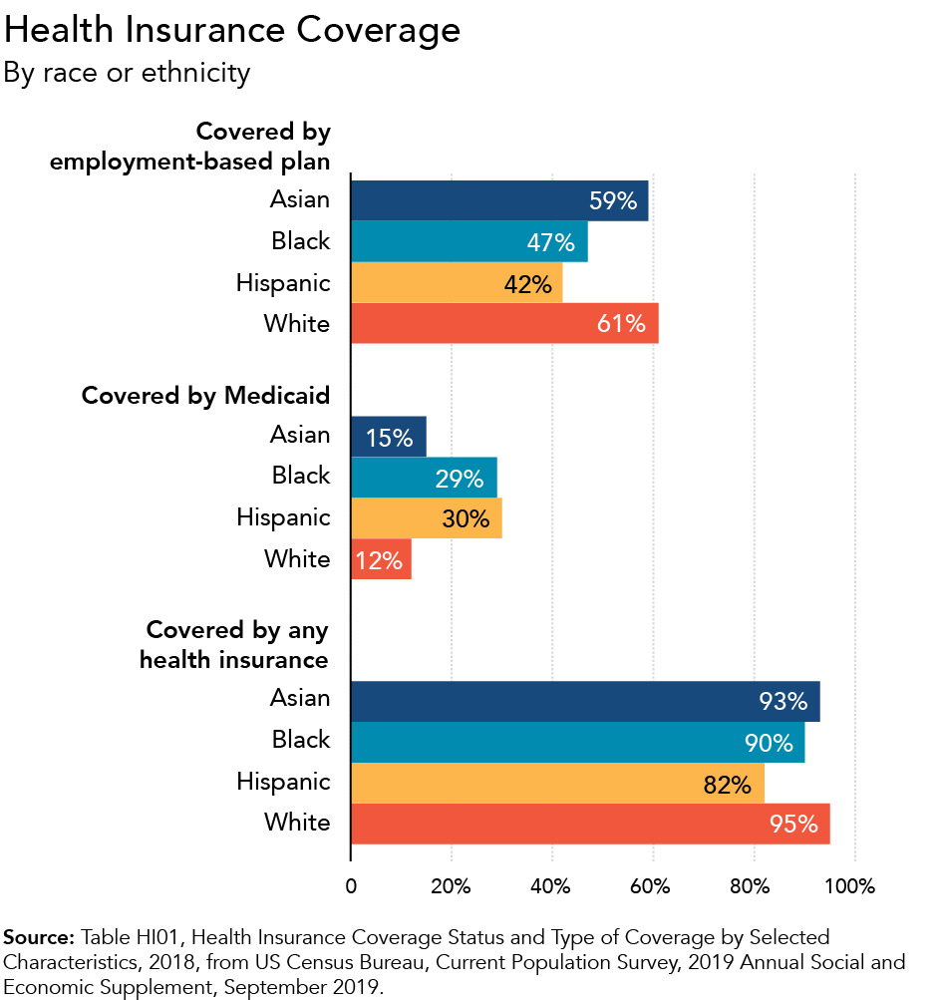Health care policies have changed significantly over the past decade following the passage of the Affordable Care Act. Because both private and Medicaid coverage have subsequently expanded, health insurance coverage rates have increased among all nonelderly people, with particularly large gains among people of color.
Where to find this information on Form 1040: Schedule 1: Line 12. Health savings account deduction; Line 16. Self-employed health insurance deduction; Schedule 3: Line 9. Net premium tax credit; Schedule A: Line 1. Medical and dental expenses
The American opportunity tax credit, the lifetime learning credit, and other tax preferences are aimed at increasing access to higher education and offsetting the rising costs of education. Altogether, these will cost the federal government about $120 billion between 2019 and 2022. However, studies have shown that these subsidies have not significantly increased access to higher education among low-income families. Middle- to upper-income families, who are less likely to be families of color, receive the largest share of benefits from direct higher-education tax subsidies. Students of color are more likely to receive aid from need-based Pell grants.
Higher-education enrollment rates are similar among White, Black and Hispanic students. However, of those seeking a bachelor’s degree, White students are more likely than Black and Hispanic students to graduate within six years of starting an undergraduate program. Overall, Black and Hispanic people attain bachelor’s degrees at lower rates than both White and Asian people.
Higher education has positive effects on employment and income security as well as on lifelong wealth-building opportunities. Although the enrollment disparity in bachelor's degree programs has narrowed, attainment gaps between White students and Black and Hispanic students have widened since 1990.
Where to find this information on Form 1040: Line 18c. American opportunity credit; Schedule 3: Line 3. Education credits
The student loan interest deduction allows certain taxpayers with qualified student loans to reduce their taxable income by the amount of loan interest they paid during the year, up to $2,500. Only taxpayers with adjusted gross income under $80,000 ($165,000 for joint filers) can use the deduction, and it costs the federal government about $2 billion each year. The deduction is of no benefit to low-income families with zero income tax liability, so it largely benefits middle- to high-income families.
Among undergraduate students in 2016, 15 percent of White students borrowed more than $26,500 for their education, compared with 21 percent of Black students and under 10 percent each for Hispanic and Asian students. However, Black and Hispanic families had a debt-to-assets ratio two to three times higher than that of White families, potentially raising their costs for future borrowing and the probability of defaulting.
Black and Hispanic students have lower lifetime earnings and fewer family assets to service their debt, and because of credit and labor market inequities, student debt inequities by race actually increase following graduation.
Where to find this information on Form 1040: Schedule 1: Line 20. Student loan interest deduction
Taxpayers can either take the standard deduction or claim itemized deductions that are subtracted from their adjusted gross income to determine their taxable income. Itemized deductions include payments of state and local taxes, mortgage interest on owner-occupied residences, and charitable contributions. The Tax Cuts and Jobs Act of 2017 almost doubled the standard deduction and temporarily restricted several itemized deductions through 2025. Almost 90 percent of taxpayers took the standard deduction in 2018, while the number of itemizers dropped by over half.
High-income households are more likely to benefit from itemized deductions. Black and Hispanic households are underrepresented among high-income households: in 2018, they constituted 27 percent of all households but only 12 percent of households with income over $200,000. Low-income households, among which Black and Hispanic households are disproportionately represented, benefited from the expansion of the standard deduction.
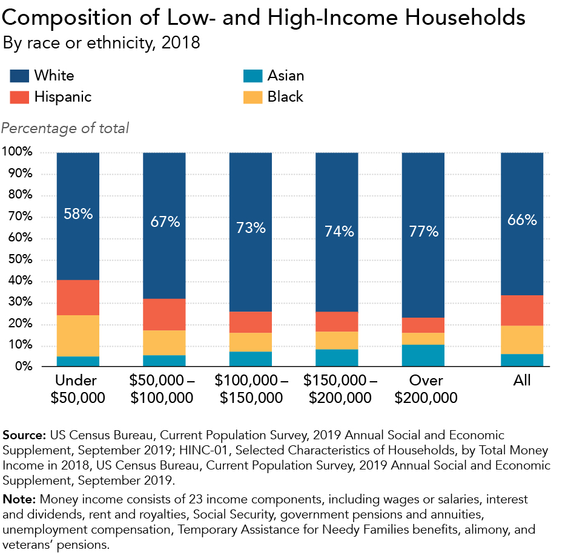Although any filer may choose to itemize, benefits from itemizing go primarily to the top of the income distribution (which was true before the 2017 tax law as well). According to Tax Policy Center estimates, the top 1 percent of households by income, who are disproportionately less likely to be households of color, will receive over 40 percent of total benefits from itemizing in 2019. Altogether, adjusting for their interactivity, itemized deductions will cost the federal government $70 billion in 2019.
Where to find this information on Form 1040: Line 9. Standard deduction or itemized deductions; Schedule A: Total itemized deductions
Taxpayers are allowed to take an itemized deduction for state and local taxes paid on income, sales, real estate, and personal property through the state and local tax (SALT) deduction. The Tax Cuts and Jobs Act of 2017 instituted a temporary $10,000 cap on the annual deduction, and the number of claimants and average amount deducted fell. However, as is true of all itemized deductions, benefits primarily go to high-income households. According to Tax Policy Center estimates, taxpayers with income over $100,000 accrued 90 percent of total benefits from the SALT deduction in 2018.
Black and Hispanic households constituted 27 percent of all households but only 16 percent of those with income over $100,000. SALT deduction benefits vary not just by income but also by state; for example, the share of SALT deduction amounts claimed by taxpayers with adjusted gross income over $100,000 ranged from 70 percent in Texas to 85 percent in California, with Black and Hispanic households less likely to be among the high-income households in those states.
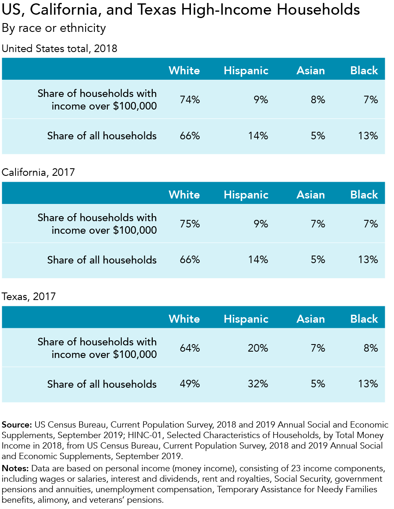The SALT deduction will cost the federal government around $95 billion between 2019 and 2022, dramatically less than the projected amount before the Tax Cuts and Jobs Act of 2017. Benefits from the current SALT deduction, and benefits from itemizing deductions in general, primarily accrue to higher-income households, who are less likely to be Black and Hispanic households.
Where to find this information on Form 1040: Schedule A: Line 5. State and local taxes
The federal income tax code subsidizes homeownership through tax incentives such as the mortgage interest deduction, the deduction for state and local property taxes, and the exclusion of a portion of realized capital gains from the sale of a home. However, these provisions generally have not increased homeownership rates; they instead have made it likelier that taxpayers buy larger homes by taking on more debt. The Tax Cuts and Jobs Act of 2017 limited the tax benefits from the mortgage interest and property tax deductions by making itemizing less beneficial overall. However, this also means that high-income households who continue to itemize will see an increased share of the remaining benefits. Altogether, homeownership tax provisions will cost the federal government more than $280 billion between 2019 and 2022.
Homeownership rates for White households were significantly higher than for people of color in 2018, and these disparities have remained fairly stable over time. Further, monthly housing costs constituted more than half of household income for higher shares of Black, Hispanic, and Asian households than for White households.
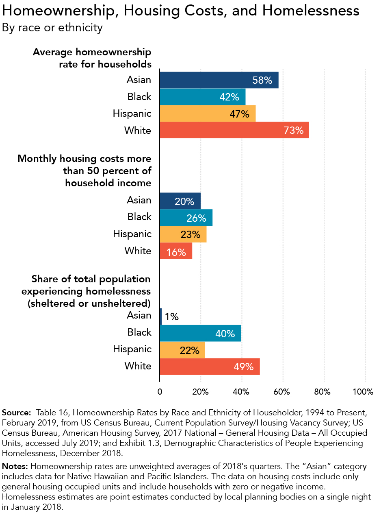Homeownership continues to be an important way to build wealth and financial mobility in the US, but households of color are significantly less likely to own their homes. For Black households in particular, the long history of redlining and segregation in the United States has had a substantial impact on today's housing and wealth disparities.
Where to find this information on Form 1040: Schedule A: Line 5b. State and local real estate taxes; Line 8. Home mortgage interest and points
The federal tax code subsidizes charitable giving by allowing individual taxpayers to claim an itemized deduction for contributions of cash, financial assets, real estate, and property such as clothing to qualifying tax-exempt organizations. This tax incentive lowers the net cost of gifts and has historically subsidized about 60 percent of total charitable giving. But this itemized deduction does not benefit the vast majority of households taking the standard deduction. The Tax Cuts and Jobs Act of 2017 lowered the marginal tax benefit of charitable giving by reducing both the number of itemizers and income tax rates. However, this provision will still cost the federal government more than $170 billion between 2019 and 2022.
Almost 60 percent of White and Asian households gave to formal charitable organizations in 2015 compared with a third of Black and Hispanic households. As a share of income, Black and White households made slightly more formal charitable donations than Hispanic households.
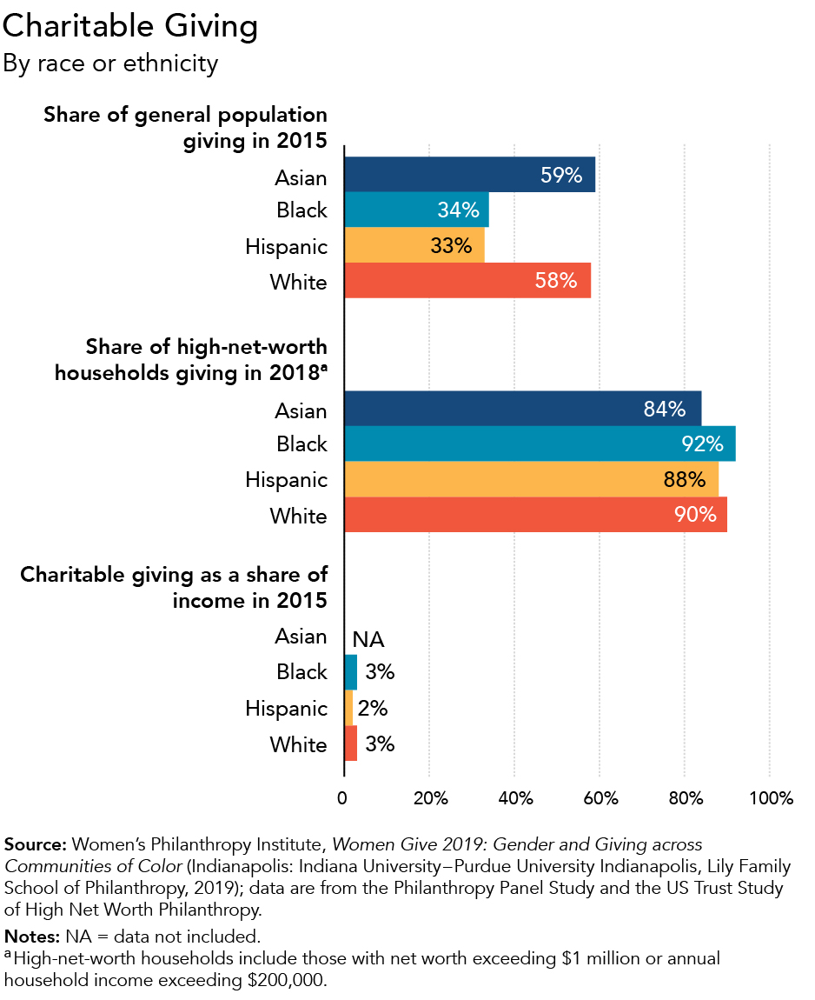The Tax Policy Center estimates that about 92 percent of the total benefits from the tax deduction for charitable contributions go to the top 20 percent of taxpayers by income, who are significantly less likely to be people of color. Over time, communities of color have been donating at increasing levels and shares of their income.
Where to find this information on Form 1040: Schedule A: Gifts to charity
The amount taxpayers owe is determined by their income, filing status, and eligible credits and deductions. The Tax Cuts and Jobs Act of 2017 significantly changed the income tax system by lowering marginal individual income tax rates, expanding the standard deduction, eliminating the personal exemption, increasing the child tax credit, and introducing a deduction for some pass-through income. Most of the individual income tax changes are temporary and set to expire at the end of 2025. Overall, the Tax Policy Center estimates that about 80 percent of taxpayers got a tax cut in 2018; about 5 percent saw a tax increase.
The top 20 percent of taxpayers by income (or those with over $149,400) accrued 65 percent of total benefits in 2018 from the 2017 tax law changes. Black and Hispanic households make up 27 percent of all households, but constitute only 14 percent of households with over $150,000.
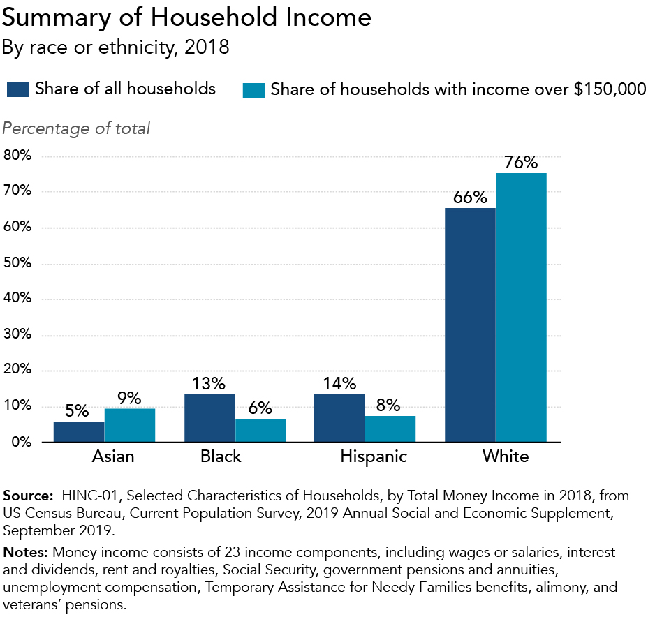Overall, federal income taxes are progressive, meaning that the average income tax burden tends to increase with income. Therefore, federal income taxes help reduce income inequality and racial income gaps.
Where to find this information on Form 1040: Line 16. Total tax; Line 23. Amount you owe